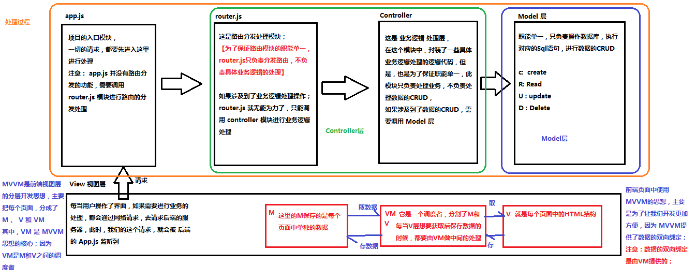

企业为了提高开发效率：
在Vue中，一个核心的概念，就是让用户不再操作DOM元素，解放了用户的双手，让程序员可以更多的时间去关注业务逻辑；
增强自己就业时候的竞争力
框架
库（插件）：
提供某一个小功能，对项目的侵入性较小，如果某个库无法完成某些需求，可以很容易切换到其它库实现需求。
举例：
AngularJS 提供更多的是一套解决方案，更像是一个生态。
Vue 和 React目前都是用了 Virtual Dom。
| vue | react |
|---|---|
| 模板和渲染函数的弹性选择 | 更适用于大型应用和更好的可测试型 |
| 简单的语法及项目创建 | 同时适用于web端和原生APP |
| 更快的渲染速度和更小的体积 | 更大的生态圈带来的更多支持和工具 |
Vue.js 是目前最火的一个前端框架，React是最流行的一个前端框架。
Vue.js 是一套构建用户界面的框架，只关注视图层。
国内的很多开发者喜欢 Vue；国外的开发者更喜欢 React，适合做大型网站。
2016.10发布2.0版本。

xxxxxxxxxx<html lang="en"><head> <meta charset="UTF-8"> <meta name="viewport" content="width=device-width, initial-scale=1.0"> <meta http-equiv="X-UA-Compatible" content="ie=edge"> <title>Document</title> <!-- 1. 导入Vue的包 --> <script src="./lib/vue-2.4.0.js"></script></head><body> <!-- 将来 new 的Vue实例，会控制这个 元素中的所有内容 --> <!-- Vue 实例所控制的这个元素区域，就是我们的 V --> <div id="app"> <p>{{ msg }}</p> </div> <script> // 2. 创建一个Vue的实例 // 当我们导入包之后，在浏览器的内存中，就多了一个 Vue 构造函数 // 注意：我们 new 出来的这个 vm 对象，就是我们 MVVM中的 VM调度者 var vm = new Vue({ el: '#app', // 表示，当前我们 new 的这个 Vue 实例，要控制页面上的哪个区域 // 这里的 data 就是 MVVM中的 M，专门用来保存 每个页面的数据的 data: { // data 属性中，存放的是 el 中要用到的数据 msg: '欢迎学习Vue' // 通过 Vue 提供的指令，很方便的就能把数据渲染到页面上，程序员不再手动操作DOM元素了【前端的Vue之类的框架，不提倡我们去手动操作DOM元素了】 } }) </script></body></html>
基本的代码结构和插值表达式、v-cloakv-text和v-htmlv-bind的三种用法v-bind::title="btnTitle + ', 这是追加的内容'"v-on和跑马灯效果xxxxxxxxxx<html lang="en"><head> <meta charset="UTF-8"> <meta name="viewport" content="width=device-width, initial-scale=1.0"> <meta http-equiv="X-UA-Compatible" content="ie=edge"> <title>Document</title></head><body> <div id="app"> <!-- Vue 中提供了 v-on: 事件绑定机制 --> <!-- <input type="button" value="按钮" :title="mytitle + '123'" v-on:click="alert('hello')"> --> <input type="button" value="按钮" v-on:click="show"> <!-- v-on Vue提供的事件绑定机制 缩写是 @ --> </div> <script src="./lib/vue-2.4.0.js"></script> <script> var vm = new Vue({ el: '#app', data: { msg: '123', msg2: '<h1>哈哈，我是一个大大的H1， 我大，我骄傲</h1>', mytitle: '这是一个自己定义的title' }, methods: { // 这个 methods属性中定义了当前Vue实例所有可用的方法 show: function () { alert('Hello') } } }) /* document.getElementById('btn').onclick = function(){ alert('Hello') } */ </script></body></html>
xxxxxxxxxx<!-- 创建一个要控制的区域 --><div id="app"> <input type="button" value="浪起来" @click="lang"> <input type="button" value="低调" @click="stop"> <h4>{{ msg }}</h4></div>xxxxxxxxxx// 注意：在VM实例中，如果想要获取data上的数据，或者想要调用methods中的方法，必须通过this.数据属性名或this.方法名来进行访问，这里的this，就表示 我们new出来的VM实例对象var vm = new Vue({ el: '#app', data: { msg: '猥琐发育，别浪~~！', intervalId: null // 在data上定义 定时器Id }, methods: { lang() { // console.log(this.msg) // this if (this.intervalId != null) return; this.intervalId = setInterval(() => { // 获取到头的第一个字符 var start = this.msg.substring(0, 1) // 获取到后面的所有字符 var end = this.msg.substring(1) // 重新拼接得到新的字符串，并赋值给 this.msg this.msg = end + start }, 400) // 注意：VM实例，会监听自己身上data中所有数据的改变，只要数据一发生变化，就会自动把最新的数据，从data上同步到页面中去；【好处：程序员只需要关心数据，不需要考虑如何重新渲染DOM页面】 }, stop() { // 停止定时器 clearInterval(this.intervalId) // 每当清除了定时器之后，需要重新把intervalId置为null this.intervalId = null; } }})// 分析：// 1. 给 【浪起来】 按钮，绑定一个点击事件 v-on @// 2. 在按钮的事件处理函数中，写相关的业务逻辑代码：拿到msg字符串，然后调用字符串的substring来进行字符串的截取操作，把第一个字符截取出来，放到最后一个位置即可；// 3. 为了实现点击下按钮，自动截取的功能，需要把2步骤中的代码，放到一个定时器中去；v-on的缩写和事件修饰符.stop 阻止冒泡
xxxxxxxxxx<html lang="en"><head> <meta charset="UTF-8"> <meta name="viewport" content="width=device-width, initial-scale=1.0"> <meta http-equiv="X-UA-Compatible" content="ie=edge"> <title>Document</title> <script src="./lib/vue-2.4.0.js"></script> <style> .inner { height: 150px; background-color: darkcyan; } </style></head><body> <div id="app"> <!-- 使用 .stop 阻止冒泡 --> <div class="inner" @click="div1Handler"> <input type="button" value="戳他" @click.stop="btnHandler"> </div> </div> <script> // 创建 Vue 实例，得到 ViewModel var vm = new Vue({ el: '#app', data: {}, methods: { div1Handler() { console.log('这是触发了 inner div 的点击事件') }, btnHandler() { console.log('这是触发了 btn 按钮 的点击事件') } } }); </script></body></html>.prevent 阻止默认事件
.capture 添加事件侦听器时使用事件捕获模式
.self 只当事件在该元素本身（比如不是子元素）触发时触发回调
.once 事件只触发一次
xxxxxxxxxx<html lang="en"><head> <meta charset="UTF-8"> <meta name="viewport" content="width=device-width, initial-scale=1.0"> <meta http-equiv="X-UA-Compatible" content="ie=edge"> <title>Document</title> <script src="./lib/vue-2.4.0.js"></script> <style> .inner { height: 150px; background-color: darkcyan; } .outer { padding: 40px; background-color: red; } </style></head><body> <div id="app"> <!-- 使用 .stop 阻止冒泡 --> <!-- <div class="inner" @click="div1Handler"> <input type="button" value="戳他" @click.stop="btnHandler"> </div> --> <!-- 使用 .prevent 阻止默认行为 --> <!-- <a href="http://www.baidu.com" @click.prevent="linkClick">有问题，先去百度</a> --> <!-- 使用 .capture 实现捕获触发事件的机制 --> <!-- <div class="inner" @click.capture="div1Handler"> <input type="button" value="戳他" @click="btnHandler"> </div> --> <!-- 使用 .self 实现只有点击当前元素时候，才会触发事件处理函数 --> <!-- <div class="inner" @click="div1Handler"> <input type="button" value="戳他" @click="btnHandler"> </div> --> <!-- 使用 .once 只触发一次事件处理函数 --> <!-- <a href="http://www.baidu.com" @click.prevent.once="linkClick">有问题，先去百度</a> --> <!-- 演示： .stop 和 .self 的区别 --> <!-- <div class="outer" @click="div2Handler"> <div class="inner" @click="div1Handler"> <input type="button" value="戳他" @click.stop="btnHandler"> </div> </div> --> <!-- .self 只会阻止自己身上冒泡行为的触发，并不会真正阻止 冒泡的行为 --> <!-- <div class="outer" @click="div2Handler"> <div class="inner" @click.self="div1Handler"> <input type="button" value="戳他" @click="btnHandler"> </div> </div> --> </div> <script> // 创建 Vue 实例，得到 ViewModel var vm = new Vue({ el: '#app', data: {}, methods: { div1Handler() { console.log('这是触发了 inner div 的点击事件') }, btnHandler() { console.log('这是触发了 btn 按钮 的点击事件') }, linkClick() { console.log('触发了连接的点击事件') }, div2Handler() { console.log('这是触发了 outer div 的点击事件') } } }); </script></body></html>v-model和双向数据绑定xxxxxxxxxx<html lang="en"><head> <meta charset="UTF-8"> <meta name="viewport" content="width=device-width, initial-scale=1.0"> <meta http-equiv="X-UA-Compatible" content="ie=edge"> <title>Document</title> <script src="./lib/vue-2.4.0.js"></script></head><body> <div id="app"> <h4>{{ msg }}</h4> <!-- v-bind 只能实现数据的单向绑定，从 M 自动绑定到 V， 无法实现数据的双向绑定 --> <!-- <input type="text" v-bind:value="msg" style="width:100%;"> --> <!-- 使用 v-model 指令，可以实现 表单元素和 Model 中数据的双向数据绑定 --> <!-- 注意： v-model 只能运用在 表单元素中 --> <!-- input(radio, text, address, email....) select checkbox textarea --> <input type="text" style="width:100%;" v-model="msg"> </div> <script> // 创建 Vue 实例，得到 ViewModel var vm = new Vue({ el: '#app', data: { msg: '大家都是好学生，爱敲代码，爱学习，爱思考，简直是完美，没瑕疵！' }, methods: { } }); </script></body></html>
xxxxxxxxxx<div id="app"> <input type="text" v-model="n1"> <select v-model="opt"> <option value="+">+</option> <option value="-">-</option> <option value="*">*</option> <option value="/">/</option> </select> <input type="text" v-model="n2"> <input type="button" value="=" @click="calc"> <input type="text" v-model="result"></div>xxxxxxxxxx// 创建 Vue 实例，得到 ViewModel var vm = new Vue({ el: '#app', data: { n1: 0, n2: 0, result: 0, opt: '+' }, methods: { calc() { // 计算器算数的方法 // 逻辑： /* switch (this.opt) { case '+': this.result = parseInt(this.n1) + parseInt(this.n2) break; case '-': this.result = parseInt(this.n1) - parseInt(this.n2) break; case '*': this.result = parseInt(this.n1) * parseInt(this.n2) break; case '/': this.result = parseInt(this.n1) / parseInt(this.n2) break; } */ // 注意：这是投机取巧的方式，正式开发中，尽量少用 var codeStr = 'parseInt(this.n1) ' + this.opt + ' parseInt(this.n2)' this.result = eval(codeStr) } } });
第1种方式：直接在元素上通过 :style 的形式数组，书写样式对象
xxxxxxxxxx<html lang="en"><head> <meta charset="UTF-8"> <meta name="viewport" content="width=device-width, initial-scale=1.0"> <meta http-equiv="X-UA-Compatible" content="ie=edge"> <title>Document</title> <script src="./lib/vue-2.4.0.js"></script> <style> .red {color: red;} .thin {font-weight: 200;} .italic {font-style: italic;} .active {letter-spacing: 0.5em;} </style></head><body> <div id="app"> <!-- <h1 class="red thin">这是一个很大很大的H1，大到你无法想象！！！</h1> --> <!-- 第一种使用方式，直接传递一个数组，注意： 这里的 class 需要使用 v-bind 做数据绑定 --> <h1 :class="['thin', 'italic']">这是一个很大很大的H1，大到你无法想象！！！</h1> </div> <script> // 创建 Vue 实例，得到 ViewModel var vm = new Vue({ el: '#app', data: {}, methods: {} }); </script></body></html>数组中使用三元表达式，数组中嵌套对象
xxxxxxxxxx<html lang="en"><head> <meta charset="UTF-8"> <meta name="viewport" content="width=device-width, initial-scale=1.0"> <meta http-equiv="X-UA-Compatible" content="ie=edge"> <title>Document</title> <script src="./lib/vue-2.4.0.js"></script> <style> .red {color: red;} .thin {font-weight: 200;} .italic {font-style: italic;} .active {letter-spacing: 0.5em;} </style></head><body> <div id="app"> <!-- 在数组中使用三元表达式 --> <h1 :class="['thin', 'italic', flag?'active':'']">这是一个很大很大的H1，大到你无法想象！！！</h1> <!-- 在数组中使用 对象来代替三元表达式，提高代码的可读性 --> <h1 :class="['thin', 'italic', {'active':flag} ]">这是一个很大很大的H1，大到你无法想象！！！</h1> </div> <script> // 创建 Vue 实例，得到 ViewModel var vm = new Vue({ el: '#app', data: { flag: true //当为true的时候执行actice，为false的时候不执行 }, methods: {} }); </script></body></html>直接使用对象
xxxxxxxxxx<html lang="en"><head> <meta charset="UTF-8"> <meta name="viewport" content="width=device-width, initial-scale=1.0"> <meta http-equiv="X-UA-Compatible" content="ie=edge"> <title>Document</title> <script src="./lib/vue-2.4.0.js"></script> <style> .red {color: red;} .thin {font-weight: 200;} .italic {font-style: italic;} .active {letter-spacing: 0.5em;} </style></head><body> <div id="app"> <!-- 在为 class 使用 v-bind 绑定 对象的时候，对象的属性是类名，由于 对象的属性可带引号，也可不带引号，所以 这里我没写引号； 属性的值 是一个标识符 --> <h1 :class="red: true, thin: true, italic: false, active: false">这是一个很大很大的H1，大到你无法想象！！！</h1> </div> <script> // 创建 Vue 实例，得到 ViewModel var vm = new Vue({ el: '#app', data: { flag: true }, methods: {} }); </script></body></html>:style 的形式，书写样式对象xxxxxxxxxx<body> <div id="app"> <!-- 对象就是无序键值对的集合 --> <h1 :style="{ color: 'red', 'font-weight': 200 }">这是一个h1</h1> </div> <script> // 创建 Vue 实例，得到 ViewModel var vm = new Vue({ el: '#app', data: {}, methods: {} }); </script></body>data 中，并直接引用到 :style 中xxxxxxxxxx<body> <div id="app"> <!-- 对象就是无序键值对的集合 --> <h1 :style="styleObj1">这是一个h1</h1> </div> <script> // 创建 Vue 实例，得到 ViewModel var vm = new Vue({ el: '#app', data: { styleObj1: { color: 'red', 'font-weight': 200 } }, methods: {} }); </script></body>:style 中通过数组，引用多个 data 上的样式对象xxxxxxxxxx<body> <div id="app"> <h1 :style="[ styleObj1, styleObj2 ]">这是一个h1</h1> </div> <script> // 创建 Vue 实例，得到 ViewModel var vm = new Vue({ el: '#app', data: { styleObj1: { color: 'red', 'font-weight': 200 }, styleObj2: { 'font-style': 'italic' } }, methods: {} }); </script></body>v-for和key属性v-forv-for循环普通数组
xxxxxxxxxx<body> <div id="app"> <!-- <p>{{list[0]}}</p> <p>{{list[1]}}</p> <p>{{list[2]}}</p> <p>{{list[3]}}</p> <p>{{list[4]}}</p> --> <p v-for="(item, i) in list">索引值：{{i}} --- 每一项：{{item}}</p> </div> <script> // 创建 Vue 实例，得到 ViewModel var vm = new Vue({ el: '#app', data: { list: [1, 2, 3, 4, 5, 6] }, methods: {} }); </script></body>v-for循环对象数组
xxxxxxxxxx<body> <div id="app"> <p v-for="(user, i) in list">Id：{{ user.id }} --- 名字：{{ user.name }} --- 索引：{{i}}</p> </div> <script> // 创建 Vue 实例，得到 ViewModel var vm = new Vue({ el: '#app', data: { list: [ { id: 1, name: 'zs1' }, { id: 2, name: 'zs2' }, { id: 3, name: 'zs3' }, { id: 4, name: 'zs4' } ] }, methods: {} }); </script></body>v-for循环对象
xxxxxxxxxx<body> <div id="app"> <!-- 注意：在遍历对象身上的键值对的时候， 除了 有 val key ,在第三个位置还有 一个 索引 --> <p v-for="(val, key, i) in user">值是： {{ val }} --- 键是： {{key}} -- 索引： {{i}}</p> </div> <script> // 创建 Vue 实例，得到 ViewModel var vm = new Vue({ el: '#app', data: { user: { id: 1, name: '托尼·屎大颗', gender: '男' } }, methods: {} }); </script></body>v-for迭代数字
xxxxxxxxxx<body> <div id="app"> <!-- in 后面我们放过 普通数组，对象数组，对象， 还可以放数字 --> <!-- 注意：如果使用 v-for 迭代数字的话，前面的 count 值从 1 开始 --> <p v-for="count in 10">这是第 {{ count }} 次循环</p> </div> <script> // 创建 Vue 实例，得到 ViewModel var vm = new Vue({ el: '#app', data: {}, methods: {} }); </script></body>2.2.0+ 的版本里，当在组件中使用 v-for 时，key 现在是必须的。
当 Vue.js 用 v-for 正在更新已渲染过的元素列表时，它默认用 “就地复用” 策略。如果数据项的顺序被改变，Vue将不是移动 DOM 元素来匹配数据项的顺序， 而是简单复用此处每个元素，并且确保它在特定索引下显示已被渲染过的每个元素。
为了给 Vue 一个提示，以便它能跟踪每个节点的身份，从而重用和重新排序现有元素，你需要为每项提供一个唯一 key 属性。
xxxxxxxxxx<body> <div id="app"> <div> <label>Id: <input type="text" v-model="id"> </label> <label>Name: <input type="text" v-model="name"> </label> <input type="button" value="添加" @click="add"> </div> <!-- 注意： v-for 循环的时候，key 属性只能使用 number获取string --> <!-- 注意： key 在使用的时候，必须使用 v-bind 属性绑定的形式，指定 key 的值 --> <!-- 在组件中，使用v-for循环的时候，或者在一些特殊情况中，如果 v-for 有问题，必须 在使用 v-for 的同时，指定 唯一的 字符串/数字 类型 :key 值 --> <p v-for="item in list" :key="item.id"> <input type="checkbox">{{item.id}} --- {{item.name}} </p> </div> <script> // 创建 Vue 实例，得到 ViewModel var vm = new Vue({ el: '#app', data: { id: '', name: '', list: [ { id: 1, name: '李斯' }, { id: 2, name: '嬴政' }, { id: 3, name: '赵高' }, { id: 4, name: '韩非' }, { id: 5, name: '荀子' } ] }, methods: { add() { // 添加方法 this.list.unshift({ id: this.id, name: this.name }) } } }); </script></body>
v-if和v-show一般来说，v-if 有更高的切换消耗而 v-show 有更高的初始渲染消耗。因此，如果需要频繁切换 v-show 较好，如果在运行时条件不大可能改变 v-if 较好。
xxxxxxxxxx<body> <div id="app"> <!-- <input type="button" value="toggle" @click="toggle"> --> <input type="button" value="toggle" @click="flag=!flag"> <!-- v-if 的特点：每次都会重新删除或创建元素 --> <!-- v-show 的特点： 每次不会重新进行DOM的删除和创建操作，只是切换了元素的 display:none 样式 --> <!-- v-if 有较高的切换性能消耗 --> <!-- v-show 有较高的初始渲染消耗 --> <!-- 如果元素涉及到频繁的切换，最好不要使用 v-if, 而是推荐使用 v-show --> <!-- 如果元素可能永远也不会被显示出来被用户看到，则推荐使用 v-if --> <h3 v-if="flag">这是用v-if控制的元素</h3> <h3 v-show="flag">这是用v-show控制的元素</h3> </div> <script> // 创建 Vue 实例，得到 ViewModel var vm = new Vue({ el: '#app', data: { flag: false }, methods: { /* toggle() { this.flag = !this.flag } */ } }); </script></body>
xxxxxxxxxx<tr v-for="item in list | filterBy searchName in 'name'"><td>{{item.id}}</td><td>{{item.name}}</td><td>{{item.ctime}}</td><td><a href="#" @click.prevent="del(item.id)">删除</a></td></tr>
searchName 属性：xxxxxxxxxx<hr> 输入筛选名称：<input type="text" v-model="searchName">
v-for 指令循环每一行数据的时候，不再直接 item in list，而是 in 一个 过滤的methods 方法，同时，把过滤条件searchName传递进去：xxxxxxxxxx<tbody><tr v-for="item in search(searchName)"><td>{{item.id}}</td><td>{{item.name}}</td><td>{{item.ctime}}</td><td><a href="#" @click.prevent="del(item.id)">删除</a></td></tr></tbody>
search 过滤方法中，使用 数组的 filter 方法进行过滤：xxxxxxxxxxsearch(name) {return this.list.filter(x => {return x.name.indexOf(name) != -1;});}
vue-devtools的安装步骤和使用概念：Vue.js 允许你自定义过滤器，可被用作一些常见的文本格式化。过滤器可以用在两个地方：mustache 插值和 v-bind 表达式。过滤器应该被添加在 JavaScript 表达式的尾部，由“管道”符指示；
xxxxxxxxxx<td>{{item.ctime | dataFormat('yyyy-mm-dd')}}</td>
filters 定义方式：xxxxxxxxxxfilters: { // 私有局部过滤器，只能在 当前 VM 对象所控制的 View 区域进行使用dataFormat(input, pattern = "") { // 在参数列表中 通过 pattern="" 来指定形参默认值，防止报错var dt = new Date(input);// 获取年月日var y = dt.getFullYear();var m = (dt.getMonth() + 1).toString().padStart(2, '0');var d = dt.getDate().toString().padStart(2, '0');// 如果 传递进来的字符串类型，转为小写之后，等于 yyyy-mm-dd，那么就返回 年-月-日// 否则，就返回 年-月-日 时：分：秒if (pattern.toLowerCase() === 'yyyy-mm-dd') {return `${y}-${m}-${d}`;} else {// 获取时分秒var hh = dt.getHours().toString().padStart(2, '0');var mm = dt.getMinutes().toString().padStart(2, '0');var ss = dt.getSeconds().toString().padStart(2, '0');return `${y}-${m}-${d} ${hh}:${mm}:${ss}`;}}}
使用ES6中的字符串新方法 String.prototype.padStart(maxLength, fillString='') 或 String.prototype.padEnd(maxLength, fillString='')来填充字符串；
xxxxxxxxxx// 定义一个全局过滤器Vue.filter('dataFormat', function (input, pattern = '') {var dt = new Date(input);// 获取年月日var y = dt.getFullYear();var m = (dt.getMonth() + 1).toString().padStart(2, '0');var d = dt.getDate().toString().padStart(2, '0');// 如果 传递进来的字符串类型，转为小写之后，等于 yyyy-mm-dd，那么就返回 年-月-日// 否则，就返回 年-月-日 时：分：秒if (pattern.toLowerCase() === 'yyyy-mm-dd') {return `${y}-${m}-${d}`;} else {// 获取时分秒var hh = dt.getHours().toString().padStart(2, '0');var mm = dt.getMinutes().toString().padStart(2, '0');var ss = dt.getSeconds().toString().padStart(2, '0');return `${y}-${m}-${d} ${hh}:${mm}:${ss}`;}});
注意：当有局部和全局两个名称相同的过滤器时候，会以就近原则进行调用，即：局部过滤器优先于全局过滤器被调用！
xxxxxxxxxxVue.directive('on').keyCodes.f2 = 113;
Vue.config.keyCodes.名称 = 按键值来自定义案件修饰符的别名：xxxxxxxxxxVue.config.keyCodes.f2 = 113;
<input type="text" v-model="name" @keyup.f2="add">
// 自定义全局指令 v-focus，为绑定的元素自动获取焦点：
Vue.directive('focus', {
inserted: function (el) { // inserted 表示被绑定元素插入父节点时调用
el.focus();
}
});
// 自定义局部指令 v-color 和 v-font-weight，为绑定的元素设置指定的字体颜色 和 字体粗细：
directives: {
color: { // 为元素设置指定的字体颜色
bind(el, binding) {
el.style.color = binding.value;
}
},
'font-weight': function (el, binding2) { // 自定义指令的简写形式，等同于定义了 bind 和 update 两个钩子函数
el.style.fontWeight = binding2.value;
}
}
<input type="text" v-model="searchName" v-focus v-color="'red'" v-font-weight="900">
Vue.elementDirective('red-color', {
bind: function () {
this.el.style.color = 'red';
}
});
使用方式：
<red-color>1232</red-color>